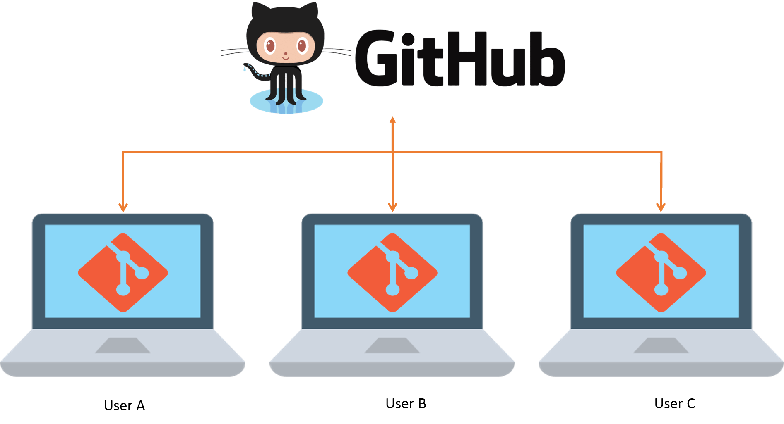
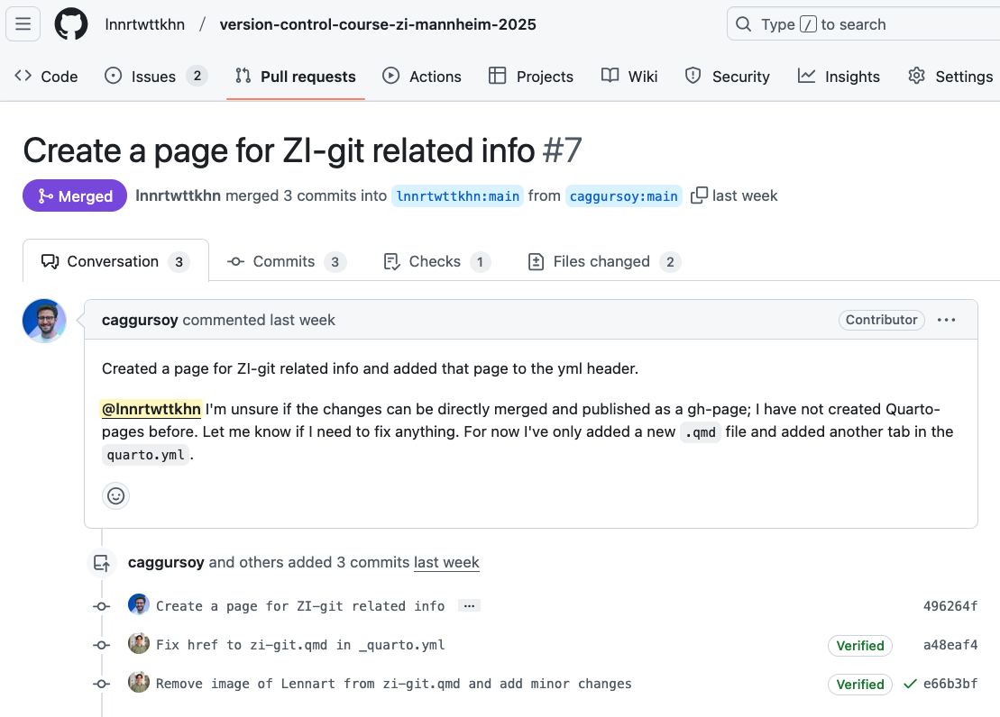
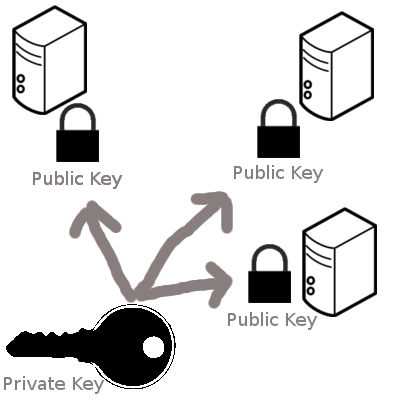

![]()
| Command | Description |
|---|---|
git branch |
Lists / creates and deletes branches |
git branch feature |
Creates the feature branch |
git branch -d feature |
Deletes the feature branch |
git switch |
Switches between branches |
git switch feature |
Switches to the feature branch |
git checkout |
Switches between branches |
git checkout -b feature |
Creates and switches to the feature branch |
git merge |
Merges branches |
git merge feature |
Merges the feature branch into the current branch |
git merge --abort |
Aborts a merge |
git merge --squash |
Squaches commits on branch into a single commit and merge |
Session 6: Integration with GitHub / GitLab
Track, organize and share your work: An introduction to Git for research
Course at Max Planck Institute for Human Development
Slides | Source


14:00
1 Last session: Branches
Last session: Branches
After the last session, you should now be able to answer the following questions / do the following:
💡 You understand the purpose and benefits of using branches in Git.
💡 You can create and switch between branches.
💡 You can merge branches and resolve merge conflicts.
💡 You can name at least three best practices when working with branches.
Last session: Cheatsheet
Branches
Last session: recipes project
At the end of this session, you should have accomplished the following:
- You created a new branch and merged changes into your default branch (
mainormaster). - You created and resolved a merge conflict.
Please keep the recipes folder! We will continue to use it in the following sessions.
2 This session: Integration with GitHub / GitLab
This session: Integration with GitHub / GitLab

This session: Collaboration via Git and GitHub

Learning objectives
💡 You can create a remote repository.
💡 You can connect your local Git repository to a remote repository service like GitHub or GitLab.
💡 You can pull and push changes to and from a remote repository.
💡 You can clone a repository from a remote repository.
Reading
Tasks
In this session, you will work on the following tasks:
- Reading: Read the chapter(s) “Remotes - Introduction” in the Version Control Book.
- Implementation: Try out the commands in the chapter.
- Exercises: Work on the exercises for the
recipesproject.
As always:
- Try out the commands of this session and play around with them.
- Check whether you have achieved the learning objectives.
- Ask questions!
- Let’s git started!
recipes project
At the end of this session, you should have accomplished the following:
- You created a GitHub account.
- You connected your GitHub account to your local Git using SSH.
- You created a new private(!) GitHub repository.
- You uploaded (i.e., “pushed”) the default branch of your
recipesrepository to GitHub.
Collaboration Option 1/2 (Basic / Advanced):
- You invited a partner from the course as a collaborator to your
recipeson GitHub. - You collaborated on a shared project by adding and committing changes to your partner’s repository.
Collaboration Option 3 (Alternative):
- You clone your own repository to a different location on your computer.
- Stage and commit changes in the repository in this new location.
- Push the changes to GitHub and pull them in the original repository location on your computer.
Optional:
- You created a short
README.mdfile in your repository.
Please keep the recipes folder! We will continue to use it in the following sessions.
Cheatsheet
| Command | Description |
|---|---|
git remote |
Manages remote repositories |
git clone |
Creates a local copy of a repository |
git pull |
Fetches and merges the latest changes from a remote repository into the current branch |
git fetch |
Updates remote tracking branches |
git push |
Uploads local commits to a remote repository |
Exercises (1)
Mandatory for everyone!
Connect to remote repositories using SSH
- Generate an SSH key.
- Copy the SSH key to your clipboard.
- Add the SSH key to the remote repository (for example, GitHub or GitLab).
Upload your local repository to a remote repository
- Create an empty repository on the remote repository hosting platform, for example GitHub or GitLab. Make sure to not initialize the repository with any files!
- If needed, navigate to your project repository using the command line.
- Set the remote URL of your local repository to your remote repository.
- Push the changes on your default branch (
mainormaster) to your remote repository.
Exercises (2)
Collaboration Option 1 (Basic)
Private collaboration on default branch (main or master)
- Add your exercise partner as a collaborator to your
recipesrepository on GitHub. - Clone your partner’s repository.
- Add a new recipe to your collaborator’s
recipes.txt(if you are unsure where to add it, ask your collaborator!). - Add and commit the changes.
- Push the changes to the remote repository.
- Pull your partner’s changes into your repository.
Exercises (3)
Collaboration Option 2 (Advanced)
Private collaboration with pull requests (using GitHub Flow)
- If not done already, add your exercise partner as a collaborator to your
recipesrepository on GitHub. - Clone your partner’s repository (if not already cloned).
- Create a new branch in your collaborator’s repository.
- Add a new recipe to your collaborator’s
recipes.txt(if you are unsure where to add it, ask your collaborator!). - Add and commit the changes.
- Push the changes on the new branch to the remote repository.
- Create a Pull Request (on GitLab: Merge Request).
- Review the Pull Request that your collaborator made in your repository.
- 🚀 Optional: Add additional changes on the branch pushed by your collaborator.
- Merge the pull request into your repository.
Exercises (4)
Collaboration Option 3 (Alternative)
Clone and sync your repository
- Move to a location on your computer where you want to clone a repository.
- Clone your remote repository to a different location on your computer.
- Create a new branch and add a recipe to
recipes.txtin the cloned repository. - Commit the changes and push them to GitHub.
- Pull the changes into the repository at the original location.
- Delete your newly cloned repository.
🚀 Bonus exercises
Add a README.md
- Find the option to create a new file on your remote repository in the browser.
- Name the file
README.md, add a brief description of your recipes repository (e.g., what kind of recipes it contains and who it belongs to), and provide a commit message. - 🚀 Optional: Play around with Markdown syntax.
- Save the
README.mdfile to the repository. - Pull the changes to your local repository.
Solutions
Connect to remote repositories using SSH
- In the command line, create a new SSH key. Make sure to change the example email to your email address. Optionally, provide a passphrase.
- Copy the SSH key to your clipboard. Here, we use
catto print the contents of the SSH key to the command line. Copy the contents displayed in the Terminal to your clipboard. - Add the SSH key to your remote repository account.
Solutions
Upload your local repository to a remote repository
- To create an empty repository on GitHub: (1) Go to GitHub and click the
+icon in the upper-right corner, then selectNew repository. (2) Name your repository. (3) Do not selectInitialize this repository with a README. (4) ClickCreate repository. - Optional: Navigate into the project repository using
cd(or a similar path). - Set the remote URL of the local repository to the repository using
git remote add origin <URL>. Remember to use the correct<URL>depending on whether you authentication method (typically SSH or PAT). - Push the changes on the default branch (here,
main) to the remote repository usinggit push -u origin main.
Solutions
“Private” collaboration with pull requests (using GitHub Flow)
# Add your exercise partner as a collaborator to your recipes repository
cd ~
git clone https://github.com/partner-username/partner-repo-name.git
git checkout -b new-branch-name
echo "New Recipe" >> recipes.txt
git add recipes.txt
git commit -m "Add new recipe to recipes.txt"
git push origin new-branch-name
# Create a Pull / Merge Request.
# Review the PR your partner made in your repository.
# Merge the PR into your repository.- Add your exercise partner as a collaborator to your
recipesrepository: (1) Go to your repository on GitHub. (2) Click onSettings. (2) Click onManage accessin the left sidebar. (3) ClickInvite a collaboratorand enter your partner’s GitHub username. - Move to the location on your computer where you would like to clone your partner’s repository into, using
cdin the command line. Here, wecdinto the user’s home directory (~). - Clone your partner’s repository using
git clone. Make sure that you not cloning into an existing repository. - Create a new branch in your partner’s repository.
- Add a recipe to your partner’s
recipes.txtfile. - Add and commit the changes using a descriptive commit message.
- Push the changes on the new branch to GitHub.
- Create a Pull Request: (1) Go to your partner’s repository on GitHub. (2) Click
Compare & pull requestfor your branch. (3) Provide a title and description, then clickCreate pull request. - Review the PR your partner made in your repository: (1) Go to your repository on GitHub. (2) Click on the
Pull requeststab. (3) Click on the PR made by your partner. (4) Review the changes and provide feedback. - Merge the PR into your repository: (1) After reviewing, click the green
Merge pull requestbutton. (2) ClickConfirm merge.
Solutions
Add a README.md
- In your browser, go to your remote repository (for example, on GitHub), click
Add file, and selectCreate new file. - Name the file
README.md. Add a brief description of your project. Provide a descriptive commit message at the bottom. - Play around with Markdown syntax
- Click the green
Commit new filebutton to save theREADME.mdfile to the repository. - Use
git pull origin mainto pull the changes to your local repository.
Solutions
Clone and sync your repository
cd /new/location/for/repo
git clone https://github.com/your-username/your-repo-name.git /new/location/for/repo
git checkout -b new-branch
echo "New Recipe" >> recipes.txt
git add recipes.txt
git commit -m "Add new recipe to recipes.txt"
git push -u origin new-branch
cd /original/location/for/repo
git fetch
git switch new-branch
rm -rf /new/location/for/repo- Move to the location on your computer where you would like to clone your own repository into, using
cdin the command line. - Clone your repository from GitHub to a different location on your computer.
- Stage and commit changes in the new location (consider using a new branch).
- Push the new changes to GitHub.
- Fetch these new changes to the repository in the original location.
- Delete your newly cloned repository.
3 Appendix
How does SSH work? The key and padlock analogy

- When you set up SSH, you generate a key pair: the private key stays on your device, while the public key is copied to the servers you want access to.
- Think of your public key as a padlock. You can make lots of copies of this padlock and distribute them to different places - servers, computers, or anything you want to secure (just like sharing a padlock to secure different lockers). These places install your padlock, but no one can open it because they don’t have your key.
- Your private key is the actual key that opens those padlocks. You keep it safe and never share it. As long as your key stays secure, it doesn’t matter how many padlocks you’ve distributed.
- When you try to connect to a server, SSH checks if the padlock (public key) on that server matches your key. If they match, the door opens.
Warning: “The authenticity of host can’t be established”
TL;DR: Enter yes and hit Enter.
The following message might appear when connecting to GitHub for the first time via SSH:
The authenticity of host 'github.com (140.82.121.3)' can't be established.
ECDSA key fingerprint is SHA256:nThbg6GUVB7ZdnZ3iXYvgIhXZOL7NXqb7A4s9F8XY7w.
Are you sure you want to continue connecting (yes/no/[fingerprint])?This message indicates that your system is trying to connect to a remote server (i.e., GitHub) over SSH for the first time, but it doesn’t yet trust the server’s identity.
If you are trusting the server’s identity, enter yes and hit EnterEnter. This will result in the following message:
Warning: Permanently added 'github.com' (ED25519) to the list of known hosts.This message indicates that the GitHub server’s public key has been added to your ~/.ssh/known_hosts file permanently, so you won’t be prompted with this warning the next time you connect to GitHub over SSH.
After a successful push, you will get a message like this:
Enumerating objects: 17, done.
Counting objects: 100% (17/17), done.
Delta compression using up to 8 threads
Compressing objects: 100% (12/12), done.
Writing objects: 100% (12/12), 2.11 KiB | 2.11 MiB/s, done.
Total 12 (delta 9), reused 0 (delta 0), pack-reused 0
remote: Resolving deltas: 100% (9/9), completed with 5 local objects.
To https://github.com/username/repository.git
fb3efef..8f50685 main -> mainCloning
Cloning
- Remember to clone a repo in a sensible location (not in your own repository)
- To rename the cloned repo you can use:
git clone <URL> new-folder-name
Version Control Course